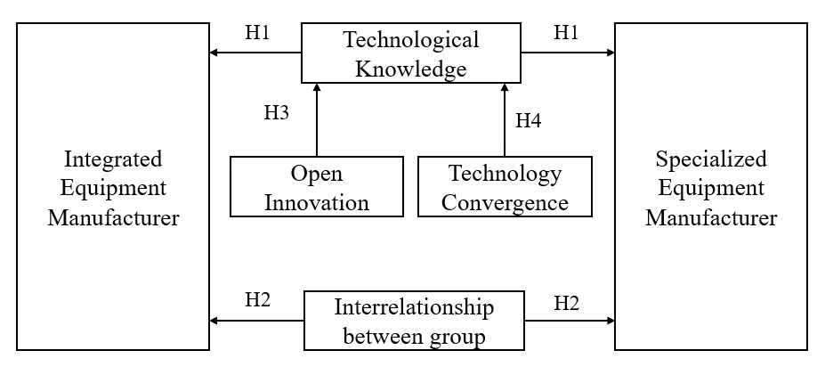
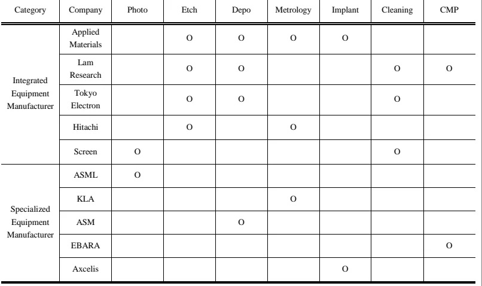
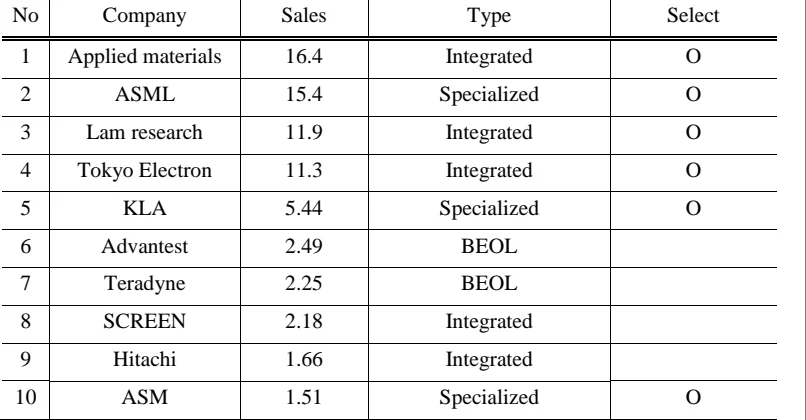
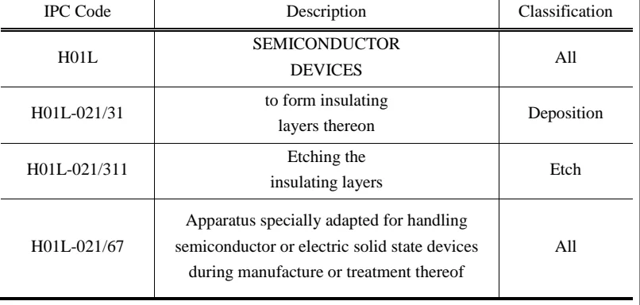
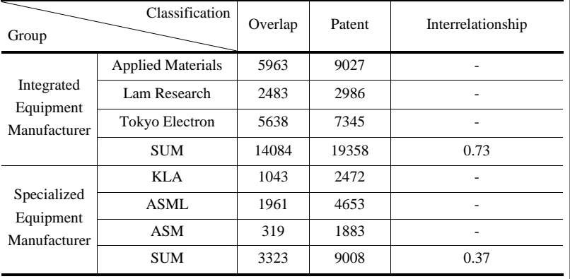
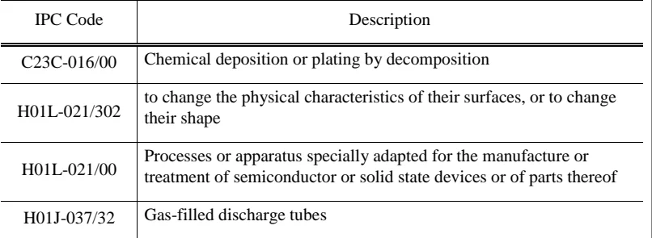
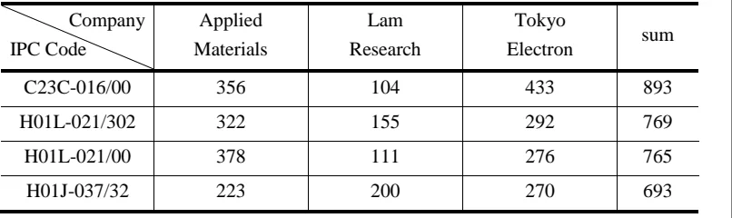
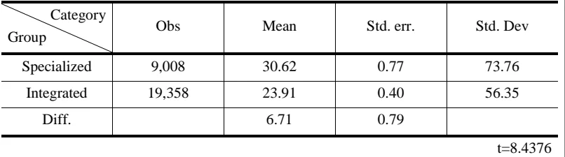
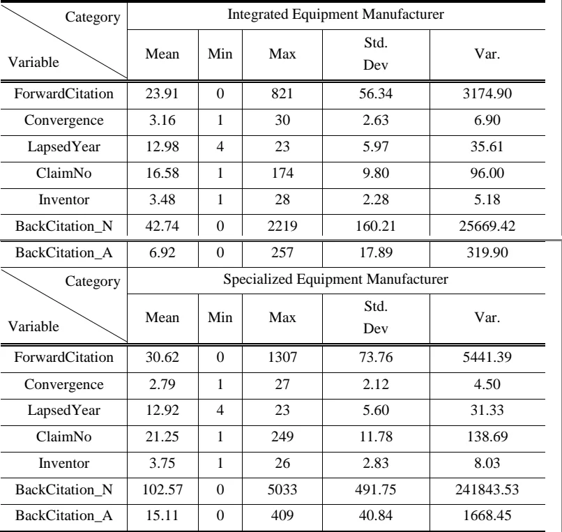
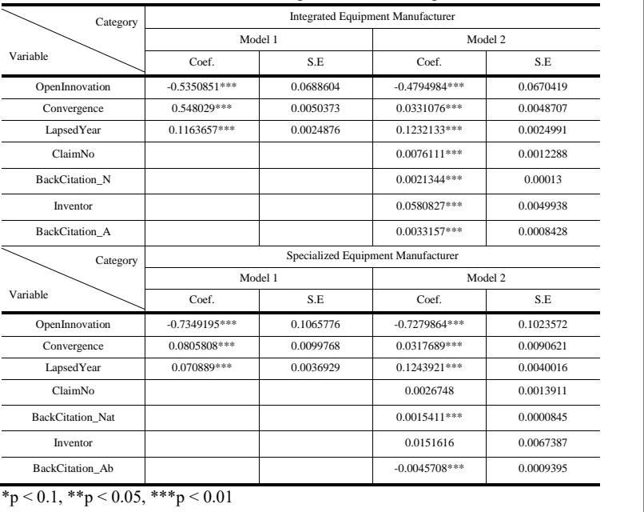

제1장 서론
자율주행 자동차, 사물인터넷(IoT), 메타버스로 대표되는 4차 산업혁명의 핵심기술은 반도체와 필수불가결한 관계에 있다[1,2]. 더 나아가 반도체는 군사적 경쟁력을 확보하는 수단으로, 국가 및 국제 안보에도 중대한 영향을 미친다[3,4].
이처럼 중요한 역할을 하는 반도체 발전의 중심에는 2년마다 반도체 소자의 집적도를 2배 높이는 무어의 법칙(Moore’ law)을 따르기 위한 노력이 있었다[5,6].
이를 기반으로 반도체는 꾸준히 기술지식을 축적해왔고, 전자기기와 관련된 다
양한 제품과 서비스를 촉발시킴과 동시에 웨어러블 디바이스(Wearable Device)
와 같은 전자기기 소형화에도 큰 공헌을 했다[7-9].
반도체 산업은 반도체 소자를 제작을 위한 반도체 장비 기업(Original Equipment Manufacturer, OEM)의 고도화된 기술지식이 필수적인 장비집약적산업에 속한다[10]. 반도체 산업의 발전은 반도체 소자 제작을 위한 웨이퍼 (Wafer)를 가공하는 반도체 장비의 발전을 통해 성장하고 있으며, 아무리 뛰어난 설계를 해도 설계자의 요구대로 웨이퍼를 가공할 수 있는 장비가 없으면 반도체 소자 생산이 불가능하다[11,12]. 즉, 뛰어난 성능의 반도체 생산을 위해서는 높은 기술력을 가진 반도체 장비가 필수적인 것이다[13]. 이를 방증하는 사례로 2022년 10월 미국에서 시행한 대중국 첨단 반도체 장비 수출 규제가 있다. 전문가들은 높은 기술지식을 갖춘 기업이 생산하는 반도체 장비를 수급받지못하는 해당 규제로 중국의 반도체 기술의 하락을 예측하고 있다[14]. 이처럼장비 기업의 기술지식은 반도체 장비 기업의 고객인 종합반도체기업(IDM, Integrated Device Manufacturer) 및 위탁생산기업(Foundry)의 반도체 소자 품질과 직결되므로[10] 반도체 산업의 발전을 위해서는 먼저 반도체 장비 기업의 기술지식 유형과 그 속성을 알아볼 필요가 있다.
지금까지 반도체 장비 기업에 관한 연구는 경영관리적 측면에서의 사례연구가 주를 이루어[13,15,16], 기술 또는 혁신 관점에서의 연구는 매우 미흡했다.
본 연구에서는 반도체 장비 기업의 기술적 관점에서 혁신 속성을 알아내고자, 반도체 전체 성능에 큰 영향을 미치는 전공정(Front-End Of Line, FEOL) 반도체장비 기업 중 시장을 지배하고 있는 기업(Incumbents) 6곳을 선정한 후 종합장비기업군과 단일장비기업군으로 나누고[17] 그룹 간의 유형별 혁신 속성을 전문공급자형 및 복합제품시스템의 특성을 기반으로 분석하고자 한다[18,19]. 이러한접근은 반도체 산업 발전에서 보다 근원적인 관점에서 이해도를 넓혀 관련 기술 및 산업정책 수립에 있어 새로운 시각을 제공할 것으로 기대된다.
제2장 이론적 배경
2.1 반도체 장비 기술
반도체 소자의 성능은 집적도와 종횡비로 인해 결정되는데, 고성능 소자의 생산을 위해서는 첨단 반도체 장비가 필수적이다[13]. 특히 높은 난이도의 노광 (Lithography), 식각(Etching), 증착(Deposition)장비의 기술지식이 요구된다[20].
반도체 소자는 로직(Logic)과 메모리(Memory)로 분류할 수 있다[15]. 로직은 집적도를 높여 소형화하는 것을 핵심으로 하며, 현재 구조를 평면(Planar Structure)에서 FinFET 및 GAA(Gate-All-Around)로 발전시키는 과정에 있다
[21,22]. 한편 메모리 분야에서는 높은 종횡비를 이용해 플래시메모리(Flash Memory)와 디램(DRAM)의 저장용량을 늘리는 기술 개발이 한창이다. 플래시메모리는 2D 낸드플래시를 3D 낸드플래시로 진화시켰으며[23-25], 디램은 초기 RCAT(Recess Channel Array Transistor)에서 현재 BCAT(Buried Channel Array Transistor)으로, 최종적으로는 VCAT(Vertical Channel cell Array Transistor)까지나아가는 것을 목표로 연구가 진행중이다[26-28].
노광 장비는 고집적도 소자 생산을 위해 회로 패턴을 작게 그리기 위한 연구가 주로 이루어졌다. 노광 장비는 광원을 이용하여 웨이퍼 위에 패턴을 그리는장비인데, 패턴의 소형화를 위해서는 짧은 파장의 광원(Light Source)을 사용해해상도(Resolution)를 높여야 한다[16,29,30]. 이에 따라 노광 장비 기업은 짧은파장의 광원을 사용할 수 있는 장비 기술지식을 꾸준히 축적해왔고, 그 결과 파장이 극도로 짧아진 광원인 극자외선(EUV)장비가 개발되었다[31].
식각 장비와 증착 장비는 높은 종횡비에서 균일한 패턴을 만들기 위한 기술지식의 축적이 두드러진다. 식각 장비는 노광 장비에서 그려진 회로 패턴대로웨이퍼를 가공하기 위해 불필요한 부분을 제거하는 장비이다. 저온에서 라디칼 (Radical)의 반응이 억제되는 것을 기반으로 한 극저온 식각(Cryogenic Etch)장비는 기존의 건식 식각(Dry Etch)의 한계를 뛰어넘고 있으며, 온도를 더욱 낮출 수있는 방향으로 연구가 활발히 진행 중이다[32,33]. 증착 장비는 노광 및 식각 장비에서 만들어진 웨이퍼 패턴위에 가스를 이용하여 층(Film)을 만드는 장비로, 높은 단차피복성(Step-coverage)을 만들 수 있는 기술지식이 꾸준하게 요구되어왔다[34]. 높은 단차피복성을 갖는 소자의 제작을 위해서는 정량의 가스가 올바른 위치에서 반응하는 것이 중요하다. 이에 따라 기존의 CVD(Chemical Vapor Deposition)장비를 보완하여 자기제한(Self-limitation)특성에 따라 원자 단위로증착할 수 있는 ALD(Atomic Layer Deposition)장비가 개발되어 양산에 적용되고있다[35].
2.2 반도체 장비 기술
기술혁신을 유형별로 분류한 Pavitt에 따르면, 반도체 장비 산업은 가격보다
제품의 성능에 더욱 민감한 특성을 보이는 전문공급자형(Specialized Suppliers)
산업에 속한다[18]. 따라서, 반도체 장비 산업은 가격을 낮추기 위한 노력보다는반도체 장비 자체의 성능을 높일 수 있는 기술지식에 주로 집중해왔다. 또한 반도체 장비는 복합제품시스템(CoPS, Complex Product System)으로도 분류된다
[19]. 자동차와 같은 대량생산제품(MPG, Mass Produced Goods)과 구별되는 복합제품시스템에서 복합(Complex)은 부품과 서브시스템이 다양한 기술적 기반을가져야 함을 의미하며, 시스템(System)은 부품과 서브시스템을 통합하여 상호작용하게 만드는 것이 중요함을 뜻한다[19,36]. 이처럼 복합제품시스템은 다양한부품 및 서브시스템이 계층적 구조로 구성된 기술 집약적 시스템이다[19,37]. 복합제품시스템에 속한 반도체 장비는 두 가지 특징을 지닌다. 첫째, 여러 가지기술적 기반을 위해 내/외부의 다양한 혁신 참여자와의 협업을 통한 개방형 혁신(Open Innovation)을 적극적으로 도모한다[38,39]. 두번째로, 개방형 혁신에 의해 얻은 외부 기술을 내부 기술과 통합한 시스템으로 만들기 위해 기술 융합 (Technology Convergence)이 필요하다. 반도체 노광 장비 기업인 ASML은 외부혁신 참여자로부터 공급받은 광원, 렌즈 등의 주요 기술을 노광 장비라는 융합된 시스템으로 만드는 복합제품시스템 기업의 대표적인 사례이다[16,40,41].
종합하면 전문공급자형 산업과 복합제품시스템으로 분류되는 반도체 장비는전문공급자형 산업 유형에 맞게 제품 성능을 중시하며, 동시에 제품 분류인 복합제품시스템 유형에 맞게 내/외부의 협력을 통한 개방형 혁신을 진행하며 다
양한 기술 분야로 융합되는 특성을 가진다. 본 연구에서는 이와 같은 세 가지특성에 따라 반도체 장비 기업을 분석하고자 한다.
2.3 반도체 장비 기업 유형
반도체 장비는 전공정(Front-End Of Line, FEOL)용 장비와 후공정(Back-End Of Line, BEOL)용 장비로 구분되는데, 전공정 장비의 중요성이 크다[10]. 전공정 장비는 웨이퍼(Bare Wafer)를 제작하고 그 위에 고객의 요구사항에 맞게 패턴을입히는 과정을 수행하며 대표적으로 노광, 식각, 증착, 측정(Metrology), CMP(Chemical Mechanical Planarization) 장비 등으로 구성된다[42]. 후공정 장비는 전공정 장비에서 만들어진 웨이퍼를 절단한 후 조립 및 포장하는 작업을수행하며, 테스트(Test)와 패키징(Packaging)장비가 대표적인 예시이다[43]. 전공정 장비는 후공정 장비에 비해 반도체 소자 전체 성능에 미치는 영향력이 커중요도가 높기 때문에 고도의 기술력이 필요하다. 이에 따라 전공정 장비는 시장 진입 장벽이 높으며 소수의 글로벌 반도체 장비 기업들이 시장 점유율의 대부분을 차지하고 있다[17].
반도체 전공정 장비 기업은 다수의 공정에 필요한 장비를 제조하는 기업과단일 공정에 필요한 장비를 제조하는 기업으로 나눠진다. Applied Materials, Lam Research, Tokyo Electron의 경우 2종류 이상의 공정에 해당하는 장비를 제조하는 대표적인 기업으로 식각, 증착, 측정, 이온주입(Implant), 등 반도체 전공정에 해당하는 다양한 종류의 반도체 장비를 제조하는 특징을 갖는다[44-46].
반면 ASML, ASM, KLA는 전공정 중 단일 공정에 해당하는 장비만 제조해서 기술을 특화하는 대표적인 기업으로 각각 노광, 증착, 측정과 같이 1종류의 장비만을 제조한다[47-50].
이상의 유형을 종합하기 위하여 전공정 장비 기업 중 2종류 이상의 장비를제조하는 기업을 종합장비기업군, 1종류 장비만 제조하는 기업을 단일장비기업군으로 나누어 Table 1에 나타내었다.
Table 1. Manufacturer segmentation[44-50]

Category Company Photo Etch Depo Metrology Implant Cleaning CMP Applied O O O O Materials Lam O O O O Research
Integrated
Equipment Tokyo O O O Manufacturer Electron Hitachi O O Screen O O ASML O KLA O Specialized
Equipment ASM O Manufacturer EBARA O Axcelis O
제3장 연구가설 및 연구방법
3.1 연구가설
3.1.1 기업 유형별 기술지식 연계성
Table 1을 살펴보면 종합장비기업군에 속하는 Tokyo Electron이 생산하는 식각

장비, 증착 장비, 세정 장비는 Tokyo Electron외에 종합장비기업군에 속한 다른기업들도 생산하고 있는 장비임을 확인할 수 있다. 이처럼 종합장비기업군에 속한 기업들은 동일한 종류의 장비를 생산하기 때문에 장비 개발 시 필요한 기술지식이 서로 중첩되므로, 기술지식의 연계성이 높을 것이라는 점을 추측해볼 수있다.
반면 단일장비기업군은 1종류의 장비만을 제조하는 기업군으로, Table 1에서볼 수 있는 것처럼 서로 제조하는 장비가 중복되지 않다는 점을 확인할 수 있다. 이처럼 단일장비기업군에 속한 기업들은 서로 다른 종류의 장비를 생산하기때문에 장비 개발 시 필요한 기술지식이 서로 중첩되지 않으므로, 기술지식의연계성이 낮다고 추측할 수 있으므로 다음과 같은 가설을 설정한다.
H1. 종합장비기업군의 기술지식 연계성이 단일장비기업군에 비해 높다.
3.1.2 기업 유형별 기술지식 영향력
단일장비기업군에 속하는 기업들의 특징은 해당 기업이 생산하는 장비에서 높은 시장 점유율을 기록하고 있다는 점이다. ASML은 노광 장비가 만들어진지 20년이 지난 1984년에 창업했음에도 불구하고 초기 일본의 Nikon과 Canon의과점 체제를 극복하는 데에 성공하여 현재 노광 장비 시장 점유율을 90%까지상승시키며 독점체제를 구축하였다[16]. KLA의 경우, 결함(Defect) 분석에 필수인 웨이퍼 상 결함 위치 정보를 포함한 Particle Map의 파일 포맷명이 KLA의이름을 딴 KLARF(KLA Reference)일 정도로 측정 장비 시장을 장악하며 58%의측정 장비 시장 점유율을 기록하고 있다[51]. 또한 ASM은 증착 장비 중 품질요구사항이 가장 까다로운 ALD장비 분야에서 52%의 시장 점유율을 달성했다
[52].
단일장비기업군은 1종류 장비 개발에 집중하며 절반이 넘는 시장 점유율을 바탕으로 시장에서 독점적 지위를 확보하고 있다. 이처럼 기업이 다수의 분야가아닌 단일 분야에 집중적으로 투자를 할 때 독점적 권리를 가질 확률이 높아진다[53]. 반도체 장비는 장비의 성능이 고객의 의사결정에 크게 영향을 끼치는전문공급자형에 속하기 때문에[18] 높은 기술지식 영향력을 바탕으로 독점 시장을 형성했을 것이라 추측할 수 있다. 따라서 종합장비기업군에 비해 단일장비기업군은 1종류의 장비의 기술지식 연구에 집중하여 독점 시장을 형성하였다고볼 수 있으므로 다음과 같은 가설을 설정한다.
H2. 단일장비기업군의 기술지식 영향력이 종합장비기업군에 비해 높다.
3.1.3 개방형 혁신
복합제품시스템의 특성에 따라 반도체 장비기업은 내/외부와의 협업을 통한개방형 혁신을 적극적으로 도입한다. 반도체 장비는 제품 수명 주기가 짧은 특징을 가지므로 반도체 장비 기업들은 시장 변화에 대응하기 위해 외부와의 협업을 통해 시장경쟁력을 강화하며 성장해왔다[10,54]. 이와 같이 반도체 장비는기술 혁신에 소요되는 시간 단축 및 시장수요와 기술변화에 대한 능동적인 대응으로 설명되는 개방형 혁신의 특성을 활용할 경우 기술력 고도화에 공헌할수 있으므로[55-57] 개방형 혁신이 잘되는 기업의 기술지식 영향력이 우월하다
는 다음과 같은 가설을 설정한다.
H3. 개방형 혁신은 종합장비기업군과 단일장비기업군의 기술지식 영향력에긍정적인 영향을 미친다.
3.1.4 기술 융합
복합제품시스템에 속하는 반도체 장비에서 필요한 기술 융합은 2개 이상의 기술 요소가 결합 되어 기술의 성숙도를 높이는 역할을 한다. 특히 장비의 복잡성이 증가함에 따라 기술 융합의 요구사항이 높아진다[58-60]. 반도체 장비의 기술 융합을 설명하는 사례로 전자빔을 웨이퍼 표면에 주사했을 때 발생되는 신호를 이용하여 결함을 분석하는 반도체 장비인 SEM(Scanning Electron Microscope)을 들 수 있다. 장비의 동작을 위해서는 전자총(Electron Gun), 스캔코일(Scan Coil), 검출기(Detector)와 같은 기본적인 모듈의 동작 기반이 되는 물리학적, 화학적 지식 뿐만 아니라 모듈을 이용해 측정된 신호를 처리하고 분석하는 알고리즘을 위한 수학적, 통계학적 지식까지 복합적인 기술들이 융합되어야 한다[61,62]. 위의 예시와 같이 기술 융합은 반도체 장비 기술지식을 고도화하는 조절 요인으로 이해할 수 있으므로 기술 융합에 대해 다음과 같은 가설을설정한다.
H4. 기술 융합의 정도는 종합장비기업군과 단일장비기업군의 기술지식 영향력에 긍정적인 영향을 미친다.
논의된 네 가지 가설을 종합한 연구 모형은 Fig 1과 같다.
Fig. 1. Research Model
3.2 데이터 및 변수
3.2.1 분석 대상 선정 및 데이터
Table 2. CY2020 Sales(Billions of US$)[63]

No Company Sales Type Select
1 Applied materials 16.4 Integrated O
2 ASML 15.4 Specialized O
3 Lam research 11.9 Integrated O
4 Tokyo Electron 11.3 Integrated O
5 KLA 5.44 Specialized O
6 Advantest 2.49 BEOL
7 Teradyne 2.25 BEOL
8 SCREEN 2.18 Integrated
9 Hitachi 1.66 Integrated
10 ASM 1.51 Specialized O
Table 2와 같이 2020년 매출액을 기준 상위 10개 반도체 장비 기업을 분석 대
상 후보군으로 선정하였다. 본 연구는 전공정 장비 기업에 대한 분석이 목적이므로 후공정 장비 기업에 속하는 Advantest와 Teradyne는 분석 대상에서 제외한다.
나머지 8개의 기업 중 종합장비기업군 매출 상위 3개 기업인 Applied Materials, Lam Research, Tokyo Electron과 단일장비기업군 매출 상위 3개 기업인 ASML, KLA, ASM을 최종 분석 대상으로 선정하였다.
분석데이터는 특허이며, 분석 대상으로 선정한 6개 기업이 2000년부터 2019 년까지 20년 간 출원한 54,477건의 미국 특허 중 등록된 28,366건의 특허를 선정하였다. 특허는 논문과 마찬가지로, 대중에게 공개되고 일정 기간이 경과되어야 인용되는 특성을 지닌다. 때문에 최근 출원된 특허는 피인용정보에 대한 신뢰도가 떨어질 수 있으므로[64] 2020년부터의 특허 데이터는 제외하였다.
3.2.2 개방형 혁신
개방형 혁신은 기업들이 외부와의 협력을 통해 해당 기업이 가지지 못한 지식들을 가져오는 과정에서 새로운 기술을 개발하는 것을 의미한다[65]. 특허 출원인이 다양하게 구성된 경우, 해당 기업이 외부로부터 신기술 아이디어를 바탕으로 개방형 혁신을 행하고 있다는 점이 명확해진다[66]. 즉, 특허 출원인의 수가기업의 개방형 혁신 수행 여부를 파악하는 기준이 될 수 있다.
이에 따라 특허가 단독 출원(출원인 1명)인 경우 개방형 혁신을 진행하지 않은 것으로 보고, 공동 출원(출원인 2명 이상)인 경우 개방형 혁신을 진행한 것으로 볼 수 있으므로, Dummy 변수를 생성하여 개방형 혁신을 진행하지 않은특허와 개방형 혁신을 진행한 특허로 나누어 분석한다.
3.2.3 기술 융합
IPC코드는 기술과 관련된 정보를 포함하고 있어, 융합과 관련된 연구에 다양하게 적용될수 있다[67,68]. 특허가 한 가지 이상의 기술 범주를 넘어가는 경우, 한 개가 아닌 여러 개의 IPC 코드가 부여되는데 이 개수가 많을수록 다양한 기술 분야가 융합된 특허라고 볼 수 있다[69]. IPC 코드를 이용한 융합 연구는 활발하게 이루어져 왔다. 기술 융합 패턴을 예측하여 의료 분야가 융합의 중심에있음을 알아내었고, 국내 태양광산업의 기술 융합 현상과 그 특성을 분류한 연구뿐만 아니라, 기술 융합을 모니터링하고 특허의 공통분류(Co-classification)를통한 현상 파악을 수행한 연구도 진행된 바가 있다[67,70,71]. 이 연구들의 특징은 IPC 코드 중 섹션, 클래스, 서브클래스를 추출한 4자리의 데이터를 기반으로했다는 점이다.
그러나 IPC 코드의 이용 범위를 서브클래스까지만 제한하는 것은 세부적인 데이터의 왜곡을 불러일으킬 수 있다는 한계점을 가지고 있다[72]. Table 3은 반도체 장비와 관련된 주요한 IPC 코드 예시이다. 서브클래스까지 정보만을 읽었을때 모든 특허의 분류는 H01L(반도체 장치)로 분류되나 서브그룹까지 특허의 논의를 확장하면 H01L-021/31(반도체본체상에 절연층 형성)은 증착 장비용 특허코드이고, H01L-021/311(절연층을 에칭)은 식각 장비용 특허 코드이며, H01L- 021/67(제조 또는 처리중의 반도체 또는 전기 고체 장치 취급에 특별히 적용되는 장치)은 반도체 전체 장비에 해당하는 코드임을 알 수 있다[73]. 이처럼 섹션, 클래스, 서브클래스만을 포함했을 때의 IPC코드와 메인 그룹과 서브그룹을모두 포함한 IPC코드와는 세부 정보에서 큰 차이를 보인다.
Table 3. IPC code description

IPC Code Description Classification SEMICONDUCTOR
H01L All DEVICES to form insulating
H01L-021/31 Deposition layers thereon Etching the
H01L-021/311 Etch insulating layers Apparatus specially adapted for handling
H01L-021/67 semiconductor or electric solid state devices All during manufacture or treatment thereof
따라서 본 연구에서는 IPC 코드에 할당된 섹션, 클래스, 서브클래스 뿐만 아니라 메인 그룹과 서브그룹을 모두 포함한 IPC 코드를 이용한다. IPC 코드가 다
를 경우 다른 기술로 분류되므로, 특허에 부여된 서로 다른 IPC 코드의 개수를측정하여 그 개수를 해당 특허의 기술 융합의 정도로 정의한다.
3.2.4 기술지식 영향력
기술지식 영향력 지표는 선행연구를 통해 제시된 것과 같이, 피인용수를 사용한다. 기존에 주로 사용되었던 특허활동력(특허 발행수)지표는 개별 특허 가치를 평가할 수 없다는 한계를 가지고 있다[74]. 이러한 한계를 극복하기 위해서피인용수가 특허의 가치 및 중요도와 비례한다는 다수의 연구와[75], 특허의 피인용수를 기술지식 영향력으로 사용한 연구에 따라[76] 피인용수를 기술지식 영향력을 나타내는 종속변수로 선정하였다.
3.2.5 기술지식 연계성
기술지식 연계성은 종합장비기업군과 단일장비기업군의 기술지식의 중첩 정도를 알아볼 수 있는 지수로, 각 그룹에서 중첩된 특허의 수에 기초하여 지수 산정이 가능하다.
Where, M denotes each manufacturer, P denotes number of patents for each manufacturer, O denotes number of overlapped patents for each manufacturer between group. 동일한 기업군에 속한 3개 기업이 동일한 IPC 코드를 가진 특허를 출원하였다
면 해당 기술에 대해 3개 기업이 동일하게 기술지식을 쌓고 있으므로 기업 간의 연계성이 높다고 판단할 수 있다. 반대로 기업들이 같은 IPC 코드를 가진 특허를 출원하지 않았다면 해당 기술에 대해서는 기업 간의 기술지식 연계성이없다고 볼 수 있다. 이에 따라, 기술지식 연계성에 대해 Eq (1)과 같이 정의한다. 해당 지수가 0이면 각 그룹 간에 중첩되는 IPC 코드가 존재하지 않으므로연계성이 전혀 없는 것이며, 1에 가까울수록 IPC 코드의 중첩 정도가 증가하므로 높은 연계성을 가진 것으로 판단할 수 있다.
그 외에 특허 출원 후 경과 시간, 청구항수, 발명자수, 후방인용수를 통제변수로 사용하였다.
제4장 연구결과
4.1 기업 유형별 기술지식 연계성
가설1의 검증을 위해 종합장비기업군과 단일장비기업군의 그룹 간 기술지식연계성을 비교하였다. Table 4와 같이 종합장비기업군에 속한 Applied Materials, Lam Research, Tokyo Electron은 등록된 총 특허 중 각각 5963개, 2483개, 5638 개의 특허가 3개의 회사에서 모두 중첩되는 IPC 코드가 부여된 특허이며, 단일장비기업군에 속한 KLA, ASML, ASM은 등록된 특허 중 각각 1043개, 1961개, 319개의 특허가 3개의 회사에서 모두 중첩되는 IPC 코드가 부여된 특허이다.
그룹 간의 종합 결과를 살펴보면 종합장비기업군의 기술지식 연계성은 0.73 으로 단일장비기업군의 기술지식 연계성인 0.37와 비교하였을 때 약 2배 높은연계성을 가지고 있으므로, 종합장비기업군의 기술지식 연계성이 단일장비기업군에 비해 클 것이라는 가설1을 지지한다.
Table 4. Interrelationship for two groups

Classification Overlap Patent Interrelationship Group Applied Materials 5963 9027 -
Integrated Lam Research 2483 2986 -
Equipment Tokyo Electron 5638 7345 - Manufacturer SUM 14084 19358 0.73 KLA 1043 2472 - Specialized ASML 1961 4653 -
Table 5와 6을 살펴보면 높은 기술지식 연계성을 갖는 종합장비기업군의 상위

IPC 코드 4개는 증착 장비용 특허(C23C-016/00), 식각 장비용 특허(H01L- 021/302), 반도체 전체 장비용 특허(H01L-021/00) 그리고 플라즈마 관련 특허 (H01J-037/32)이다. 이처럼 종합장비기업군의 특성에 맞게 다양한 장비용 특허가각 회사에 고르게 분포하는 것으로 나타났다.
Table 5. IPC code description
IPC Code Description
C23C-016/00 Chemical deposition or plating by decomposition to change the physical characteristics of their surfaces, or to change H01L-021/302 their shape Processes or apparatus specially adapted for the manufacture or
H01L-021/00 treatment of semiconductor or solid state devices or of parts thereof H01J-037/32 Gas-filled discharge tubes
Table 6. Top4 overlapped patents for Integrated Equipment Manufacturer

Company Applied Lam Tokyo sum IPC Code Materials Research Electron
H01L-021/302 322 155 292 769
H01L-021/00 378 111 276 765
H01J-037/32 223 200 270 693
4.2 기업 유형별 기술지식 영향력
종합장비기업군과 단일장비기업군의 기술지식 영향력을 비교하는 가설2의 검증을 위해 t-test를 수행하였다. Table 7은 종합장비기업군과 단일장비기업군의 기술지식 영향력을 분석한 결과이다. 분석 대상인 총 28,366개의 특허 중 종합장비기업군의 특허 19,358개와 단일장비기업군의 특허 9,008개의 피인용수 평균을살펴보면 단일공정기업군의 평균 피인용수는 30.62로, 종합공정기업군의 평균피인용수인 23.91보다 높다는 결과를 볼 수 있다. 이에 따라 종합장비기업군에비해 단일장비기업군의 기술지식이 우월하다는 가설2를 지지한다.
Table 7. T-test result for ForwardCitation

Category Obs Mean Std. err. Std. Dev Group
Integrated 19,358 23.91 0.40 56.35
Diff. 6.71 0.79 t=8.4376
4.3 개방형 혁신과 기술 융합의 영향
가설3과 가설4의 검증을 위해 변수들에 대한 회귀분석을 진행하였다. 본 연구에서 반도체 장비 기업의 기술지식 영향력을 측정하기 위해 피인용수를 종속변수로 사용하였다. 피인용수는 음의 값이 아닌 가산 자료(Non-negative, Countable Integer Value)의 특성을 갖는다. 이와 같은 특성의 변수는 포아송 회귀분석(Poission Regression) 또는 음이항 회귀분석(Negative Binomial Regression)이 적합한 분석 모형이다.
Table 8의 결과에서 볼 수 있듯이 종속변수인 피인용수는 평균과 분산이 일치

하지 않고 분산이 평균보다 큰 과대산포(Overdispersion)문제가 발생되어 포아송회귀분석이 적합하지 않은 모델로 확인되어 본 연구에서는 음이항 회귀분석을분석 모델로 채택하였다.
Table 8. Descriptive statistics of variables
Category Integrated Equipment Manufacturer Std.
Mean Min Max Var.
Variable Dev
ForwardCitation 23.91 0 821 56.34 3174.90
Convergence 3.16 1 30 2.63 6.90
LapsedYear 12.98 4 23 5.97 35.61
ClaimNo 16.58 1 174 9.80 96.00
Inventor 3.48 1 28 2.28 5.18
BackCitation_N 42.74 0 2219 160.21 25669.42
BackCitation_A 6.92 0 257 17.89 319.90 Category Specialized Equipment Manufacturer Std.
Mean Min Max Var.
Variable Dev
ForwardCitation 30.62 0 1307 73.76 5441.39
Convergence 2.79 1 27 2.12 4.50
LapsedYear 12.92 4 23 5.60 31.33 ClaimNo 21.25 1 249 11.78 138.69 Inventor 3.75 1 26 2.83 8.03
BackCitation_N 102.57 0 5033 491.75 241843.53
Table 9. Result of Negative Binomial Regression

Integrated Equipment Manufacturer Category Model 1 Model 2
Variable Coef. S.E Coef. S.E
OpenInnovation -0.5350851*** 0.0688604 -0.4794984*** 0.0670419 Convergence 0.548029*** 0.0050373 0.0331076*** 0.0048707 LapsedYear 0.1163657*** 0.0024876 0.1232133*** 0.0024991 ClaimNo 0.0076111*** 0.0012288
BackCitation_N 0.0021344*** 0.00013 Inventor 0.0580827*** 0.0049938
BackCitation_A 0.0033157*** 0.0008428 Category Specialized Equipment Manufacturer Model 1 Model 2
Variable Coef. S.E Coef. S.E
OpenInnovation -0.7349195*** 0.1065776 -0.7279864*** 0.1023572 Convergence 0.0805808*** 0.0099768 0.0317689*** 0.0090621 LapsedYear 0.070889*** 0.0036929 0.1243921*** 0.0040016 ClaimNo 0.0026748 0.0013911
BackCitation_Nat 0.0015411*** 0.0000845 Inventor 0.0151616 0.0067387
BackCitation_Ab -0.0045708*** 0.0009395 *p < 0.1, **p < 0.05, ***p < 0.01
Table 9는 기술지식 영향력 영향 요인을 나열하고 분석한 음이항 회귀분석표
이다. Model1은 세 가지의 독립변수(OpenInnovation, Convergence, LapsedYear)를 포함된 모델이며, Model2는 Model1에서 사용한 독립변수 및 통제변수까지 포함한모델이다. Model1과 Model2을 이용하여 종합장비기업군과 단일장비기업군에 대해 각각 음이항 회귀분석을 실시하였다.
종합장비기업군의 Model1과 Model2에서 개방형 혁신을 나타내는 Dummy변수인 OpenInnovation의 계수가 음의 상관관계를 가지므로, 개방형 혁신이 반도체장비 기업의 기술지식 영향력에 긍정적인 영향을 미친다는 가설3을 지지하지않는다. 단일장비기업군 역시 동일한 결과를 통해 가설3을 지지하지 않는다.
또한 종합장비기업군의 기술 융합을 나타내는 Convergence의 계수는 Model1 및 Model2 모두에서 양의 상관관계를 가지므로, 기술 융합의 빈도는 반도체 장비 기업의 기술지식 영향력에 긍정적인 영향을 미친다는 가설4를 지지한다. 단일장비기업군 역시 동일한 결과를 통해 가설4를 지지한다.
제5장 결론
5.1 연구결과 요약 및 시사점
반도체 장비 기업의 유형별 혁신 속성 및 기술지식 영향력 요인을 알아보기위해, 본 연구는 2000년부터 2019년까지 20년간 반도체 장비 기업 6곳의 등록특허 28,366건을 분석하였다. 분석 결과 종합장비기업군은 단일장비기업군에 비해 기술지식 연계성이 높았으며, 단일장비기업군은 종합장비기업에 비해 기술지식 영향력이 높았다. 또한 종합장비기업군과 단일장비기업군 모두 개방형 혁신은 기술지식 영향력에 부정적인 영향, 기술 융합은 긍정적인 영향을 미치는 것으로 나타났다.
가장 주목할 결과는 단일장비기업군이 종합장비기업군에 비해 기술지식 영향력이 높다는 점이다. 이로 인해 단일장비기업군이 높은 시장점유율을 확보하게된 배경은 다른 요인보다 한 가지 장비에 대한 집중적인 기술지식의 축적이 기반임을 알 수 있다.
본 연구는 세 가지에 대해 의의가 있다. 첫째, 반도체 장비 기업을 전문공급자형 및 복합제품시스템이라는 반도체 장비가 갖는 혁신 속성에 기반하여 분석하였다. 둘째, 그간 정성적인 연구 위주였던 반도체 장비 기업의 연구에서 벗어나 20년간 누적된 특허를 통해 정량적인 시사점을 제시했다. 마지막으로 반도체 전공정 장비 기업을 종합장비기업군과 단일장비기업군으로 나누어 기술지식 영향력과 기술지식 연계성에 대해 다른 특징을 가진 것을 밝혔다. 이에 따라 반도체장비 기업의 전략 및 정부의 반도체 관련 정책 수립 시 참고할 수 있는 객관적인 결과를 보여주었으므로 가치가 높다고 볼 수 있다.
5.2 한계점과 향후 연구 방향
본 연구는 반도체 장비 기업에 대한 특허 분석을 수행하며 다양한 시사점을도출하는 데에 성공하였다. 그러나 분석 데이터를 특허로 한정하여, 변수 측정시 재무적 성과와의 관계를 도출할 수는 없었다. 향후 연구에서는 특허 지표와재무적 성과 지표를 동시에 고려할 수 있는 연구로 확장하여 반도체 장비 기업의 기술지식에 대한 재무적 결론을 도출하여 기업의 자금 운용 방안에 대한 시사점을 도출할 수 있을 것이라 기대한다.
또한 반도체 장비 기업은 특허와 같은 정량적 지표 대신 문서화하지 않는 영업비밀, 노하우와 같은 정성적 정보를 통해 전유성(Appropriability)을 강화하는경우가 많으므로 공개된 정보만을 이용하여 분석하는 경우 한계점이 있을 수있다. 이에 따라 향후 연구에서는 현직자 인터뷰를 기반으로, 반도체 장비 기업에 대한 연구 스펙트럼을 넓힐 필요가 있다.
마지막으로 제시한 가설 중 협업에 따른 개방형 혁신에 대한 기술지식 영향력에 대한 분석 결과는 이번 연구 중 유일하게 가설을 지지하지 않았으므로 추가연구가 필요하다.
Reference
[1]M. J. Kwak and H. S. Lee and T. E. Cho, “A Delphi Survey for Development Direction of Industrial Security in Semiconductor Industry in Industry 4.0 Era : Focused on Physical Security”, THE KOREAN ASSOCIATION FOR INDUSTRIAL SECUTRITY, Vol.13, No.1, pp.49-72, 2023.
DOI : https://doi.org/10.33388/kais.2023.13.s.049 [2]S. Y. Shin and S. H. Shin, “Analysis of Korean Import and Export in the Semiconductor Industry: A Global Supply Chain Perspective”, Journal of Korea Trade, Vol.25, No.1, pp.78-104, 2021.
DOI : https://doi.org/10.35611/jkt.2021.25.6.78 [3] G. J. Ban, “The Rise of Economic Security in the New Cold War Era and South Korea’s Strategic Option”, STRATEGIC STUDIES, Vol.29, No.2, pp297-330, 2022. DOI : 10.46226/jss.2022.07.29.2.297 [4] Saif M. Khan, “U.S. Semiconductor Exports to China: Current Policies and Trends”, Analysis report, Center for Security and Emerging Technology, USA, pp.1-36. DOI : https://doi.org/10.51593/20200039 [5] A. Pizzagalli andT. Buisson and R. Beica, "3D technology applications market trends & key challenges", 25th Annual SEMI Advanced Semiconductor Manufacturing Conference (ASMC 2014), Saratoga Springs, NY, USA, Vol.1, pp.78-81, May 2014. DOI : 10.1109/ASMC.2014.6846981 [6] Y. C. Lee and J. W. Kim and K. S. Kim and C. H. Yu and S. B. Jung, “Study on Fabrication of 3-Dimensional Stacked Chip Package with Anisotropic Conductive Film”, Journal of Welding and Joining Society, Vol.23, No.3, pp.31-37, 2009. DOI : 10.5781/KWJS.2009.27.3.032 [7] P. Espadinha-Cruz and R. Godina and EMG Rodrigues, “A Review of Data Mining Applications in Semiconductor Manufacturing”, Processes, Vol.9, No.2, pp.1-38, 2021. DOI : https://doi.org/10.3390/pr9020305 [8] F. Biebl and R. Glawar and A. Jalali and A. Ansari and B. Haslhofer, “A Conceptual Model to Enable Prescriptive Maintenance for Etching Equipment in Semiconductor Manufacturing”, 13th CIRP Conference on Intelligent Computation in Manufacturing Engineering, Procedia CIRP, Gulf of Naples, Italy, Vol.88, pp.64-69, 2019. DOI : https://doi.org/10.1016/j.procir.2020.05.012 [9] H. W. Oh and W. S. Kim, “The Development of Bumped Wafer Inspection System Using the Confocal Principle”, Journal of The Institute of Electronics and Information Engineers, Vol.56, NO.7, pp.47-54, 2019.
DOI : 10.5573/ieie.2019.56.7.47 [10] H. K. Kang and J. P. Hong, “Direction of the government's R&D support policy to improve the technological competitiveness of the domestic semiconductor equipment industry”, Journal of the semiconductor & display technology, Vol.8, No.3, pp.61-69, 2009.
[11] M. Dan, “The future of equipment development and semiconductor production”, Materials Science and Engineering: A, Vol.302, No.1, pp.1-5, 2001. DOI : https://doi.org/10.1016/S0921-5093(00)01345-9 [12] Y. W. Keum, To become a mastermind behind the global market for a domestic semiconductor equipment company, The Hankyoreh, 1987,
https://www.hani.co.kr/arti/opinion/because/1077577.html, January 2023. [13] Y. H. Kwun and J.E. Eom, “A Case Study on the Mechanism of Risk Management from Global Semiconductor Equipment Companies : Focused on Applied Materials, ASML and Tokyo Electron”, Journal of CEO and Management Studies, Vol.21, No.4, pp.259-279, 2018.
[14] H. J. Jung, “The US-China Semiconductor and Korea’s Response Strategy”, The Journal of Humanities and Social science, Vol.13, No.2, pp.2521-2534, 2022. DOI : http://dx.doi.org/10.22143/HSS21.13.2.176 [15] Y. H. Kwun, “A Comparative Case Study on Ethical Management of Major Foreign Semiconductor Equipment Companies”, Journal of CEO and Management Studies, Vol.21, No.4, pp.21-49, 2019 [16] K. H. Kwak, “Historical Review of Late-Entrant Growth in the Complex Product Systems: ASML in Semiconductor Lithography Equipment”, The Review of Business History, Vol.37, No.1, pp.131-158, 2022.
DOI : http://doi.org/10.22629/kabh.2022.37.1.006 [17] M. T. Jeong, Recent trends and implications of the global semiconductor equipment industry, Research report, KIET industrial economic review, Korea, pp.18-28 [18] K. Pavitt, “Sectoral patterns of technical change: Towards a taxonomy and a theory”, Research Policy, Vol.13, No.6, pp.343-373, 1984.
DOI : https://doi.org/10.1016/0048-7333(84)90018-0 [19] R. Miller and M. Hobday and T. Leroux-Demers and X. Olleros, "Innovation in Complex Systems Industries: The Case of Flight Simulation", Industrial and Corporate Change, Vo.4, No.2, pp.363-400, 1955
DOI : https://doi.org/10.1093/icc/4.2.363 [20] J. A. Sethian and D. Adalsteinsson, "An overview of level set methods for etching, deposition, and lithography development", IEEE Transactions on Semiconductor Manufacturing, Vol.10, No.1, pp. 167-184, 1997.
DOI : 10.1109/66.554505 [21] A. Vyas and A. Kumar and B. Sahu and C. Henderson and G. Bersuker, INTERNATIONAL ROADMAP FOR DEVICES AND SYSTEMS 2021 Update,
Research report, IEEE, USA, pp.1-38.
[22] S. Mukesh and J. Zhang, “A Review of the Gate-All-Around Nanosheet FET Process Opportunities”, Electronics, Vol.11, No.21, 2022.
DOI : https://doi.org/10.3390/electronics11213589 [23] Y. Chang and L. Chen and K. Chen and T. Luoh and L. Yang, “Carbon Plug Application in 3D NAND Fabrication”, 2022 IEEE International Interconnect Technology Conference (IITC), IEEE, San Jose, USA, Vol.1, pp.16-18, June2022.
DOI : 10.1109/IITC52079.2022.9881319 [24] L. Mark, 3D NAND’s Vertical Scaling Race, Semiconductor Engineering, 2008, https://semiengineering.com/3d-nands-vertical-scaling-race/, Dec2020. [25] H. Kim and S. J. Ahn and Y. G. Shinand K. Lee and E. Jung, "Evolution of NAND Flash Memory: From 2D to 3D as a Storage Market Leader," 2017 IEEE International Memory Workshop (IMW), IEEE, Monterey, USA, Vol.1, pp.1-4, May 2017.
DOI : 10.1109/IMW.2017.7939081 [26] K. Kim, "Future silicon technology", 2012 Proceedings of the ESSCIRC (ESSCIRC), IEEE, Bordeaux, France, pp.1-6,September 2012.
DOI: 10.1109/ESSCIRC.2012.6341243 [27] J. Lee and D. Ha and K. Kim, "Novel cell transistor using retracted Si3N4-liner STI for the improvement of data retention time in gigabit density DRAM and beyond ", IEEE Transactions on Electron Devices, Vol. 48, No.6, pp.1152-1158, 2001. DOI : 10.1109/16.925241 [28] K. N. Kim, “From the future Si technology perspective: Challenges and opportunities”, 2010 International Electron Devices Meeting, IEEE, San Francisco, USA, pp. 1.1.1-1.1.9, December 2010.
DOI : 10.1109/IEDM.2010.5703274 [29] F. Bernard, “Advanced optical lithography development, from UV to EUV”, Microelectronic Engineering, Vol.61-62, No.2, pp.11-24, 2002.
DOI : https://doi.org/10.1016/S0167-9317(02)00427-6 [30] T. Ito and S. Okazaki, “Pushing the limits of lithography”, Nature, Vol.406, No.6799, pp.1027-1031, 2000.
DOI : 10.1038/35023233 [31] A. Pirati and R. Peeters and D. Smith and S. Lok and van Noordenburg, EUV lithography performance for manufacturing: status and outlook, Research report, SPIE Advanced Lithography, USA, pp.1-15.
DOI : 10.1117/12.2220423 [32] S. Tachi and K. Tsujimoto and S. Okudaira, “Low‐temperature reactive ion etching and microwave plasma etching of silicon”, Applied Physics Letters, Vol.52, No.8, pp.616– 618, 1988.
DOI : 10.1063/1.99382 [33] R. Dussart and T. Tillocher and P. Lefaucheux and M. Boufnichel, “Plasma cryogenic etching of silicon: from the early days to today’s advanced technologies”, Journal of Physics D: Applied Physics, Vol.47, No.12, 2014.
DOI : 10.1088/0022-3727/47/12/123001 [34] R. G Gordon and D. Hausmann and E. Kim J. Shepard, “A Kinetic Model for Step Coverage by Atomic Layer Deposition in Narrow Holes or Trenches”, Chemical Vapor Deposition, Vol.9, No.2, pp.73-78, 2003.
DOI : 10.1002/cvde.200390005 [35] J. Lu and J. W. Elam and P. C. Stair, “Atomic layer deposition - Sequential self-limiting surface reactions for advanced catalyst “bottom-up” synthesis”, Surface Science Reports, Vol.71, No.2, 410-472, 2016.
DOI : 10.1016/j.surfrep.2016.03.003 [36] J. Markard and B. Truffer, “Innovation processes in large technical systems: Market liberalization as a driver for radical change?”, Research Policy, Vol.35, No.5, pp.609-625, 2006.
DOI : https://doi.org/10.1016/j.respol.2006.02.008 [37] K. H. Kwak and D. G. Chang, “Open Innovation in Complex Product Systems : Evidence from the ASML in the Lithography Equipment Industry”, Korean Corporation Management Review, Vol.29, No.5, pp.121-151, 2022.
DOI : http://dx.doi.org/10.21052/KCMR.2022.29.5.121 [38] J. M. Kang, The effect of open innovation on technology commercialization performance: A case of bio-pharmaceutical industry, Ph.d dissertation, Sungkyunkwan University, pp.1-128.
[39] U. Lichtenthaler, “Open innovation in practice: an analysis of strategic approaches to technology transactions”, IEEE Transactions on Engineering Management, Vol.55, No.1, pp.148~157, 2008.
DOI : 10.1109/TEM.2007.912932 [40] A. A. Alblas and J. H. Wortmann, “Function-technology platforms improve efficiency in high-tech equipment manufacturing: a case study in complex products and systems (CoPS)”, International Journal of Operations & Production Management, Vol.34, No.4, pp.447-476. 2014
DOI : https://doi.org/10.1108/IJOPM-06-2012-0221 [41] Y. W. Keum, Escape from the 'Japanese shadow' of the Korean semiconductor industry, The Hankook Ilbo, 1977,
https://www.hankookilbo.com/News/Read/A2023020815010005729, February2023. [42] S. H. Yoon and I. Ji, “Analyzing Technology Competitiveness by Country in the Semiconductor Cleaning Equipment Sector Using Quantitative Indices and Co- Classification Network”, Journal of the Korea Convergence Society, Vol.10, No.11, pp.85-93, 2019.
DOI : https://doi.org/10.15207/JKCS.2019.10.11.085 [43] V. John, The Health and Competitiveness of the U.S. Semiconductor Manufacturing Equipment Industry, Research report, United States International Trade Commission, USA, pp.1-30.
DOI : http://dx.doi.org/10.2139/ssrn.3413951 [44] Applied Materials, 2022 Annual report, Annual report, Applied Materials, USA, pp.1- [45] Tokyo Electron, Integrated Report 2022, Annual report, Tokyo Electron, Japan, pp.1- [46] Lam Research, 2022 Annual report, Annual report, Lam Research, USA, pp.1-171 [47] KLA, Annual report 2022, Annual Report, KLA, USA, pp.1-156 [48] K. W. Kang, Growth and Implications of US Semiconductor Equipment Companies, Research report, KOREA INSTITUTE OF MACHINERY & MATERIALS, Korea, pp.1- 26.
[49] ASM, Annual Report 2022, Annual Report, ASM International, Netherlands, pp.1-236. [50] ASML, Annual Report 2022, Annual Report, ASML, Netherlands, pp.1-317. [51] C. Robert, KLA’s market share of metrology/inspection equipment Jumps 3% in 2020, Seeking Alpha, 2021, https://seekingalpha.com/article/4419900-kla-s-market-share-of- metrology-inspection-equipment-jumps-3-in-2020, April 2020.
[52] YIC International, The top ten semiconductor equipment factories in the world, there is another Dutch company, YIC International, https://www.yic-electronics.com/news/The- top-ten-semiconductor-equipment-factories-in-the-world,there-is-another-Dutch- company.html, April 2020.
[53] J. R. Hicks, “Annual Survey of Economic Theory: The Theory of Monopoly”, Econometrica, Vol.3, No.1, pp.1-20, 1935.
DOI : https://doi.org/10.2307/1907343 [54] L. Hau and E. Ricardo and H. Arnd and C. Shuliang, Creating Values with Operations and Analytics, pp.1-311, Springer, 2022, p.200.
[55] J. Hagedoorn and J. Schakenraad, “The effect of strategic technology alliances on company performance”, Strategic Management Journal, Vol.15, No.4, pp.291-309, 1994. DOI : https://doi.org/10.1002/smj.4250150404 [56] B. Uzzi, “Social structure and competition in interfirm networks: The paradox of embeddedness”, Administrative science quarterly, Vol.42, No.1, pp.35-67, 1997. DOI : https://doi.org/10.2307/2393808 [57] P. Mariti and R.H. Smiley “Co-operative agreements and the organization of industry”, The Journal of Industrial Economics, Vol.31, No.4, pp.437-451, 1983. DOI : https://doi.org/10.2307/2098340 [58] S. Y. Sohn and W. S. Lee and Y. H. Ju, “Valuing academic patents and intellectual properties: different perspectives of willingness to pay and sell”, Technovation, Vol.33, No.1, pp.13–24, 2013.
DOI : https://doi.org/10.1016/j.technovation.2012.10.003 [59] M. Karvonen and T. Kässi, “Patent citations as a tool for analysing the early stages of convergence”, Technological Forecasting and Social Change, Vol.80, No.6, pp. 1094- 1107, 2013.
DOI : https://doi.org/10.1016/j.techfore.2012.05.006 [60] N. I. Kim and H. S. Lee and W. J. Kim and H. J. Lee and J. H. Suh, “Dynamic Patterns of Industry Convergence: Evidence from a Large Amount of Unstructured Data”, Research Policy, Vol.44, No.9, pp.1734-1748, 2015.
DOI : https://doi.org/10.1016/j.respol.2015.02.001 [61] P. Masson and W. Pieczynski, “SEM algorithm and unsupervised statistical segmentation of satellite images”, IEEE Transactions on Geoscience and Remote Sensing, Vol.31, No.3, pp.618-633, 1993.
DOI : 10.1109/36.225529 [62] A. MOHAMMED and A. ABDULLAH, “SCANNING ELECTRON MICROSCOPY
(SEM): A REVIEW”, Proceedings of 2018 International Conference on Hydraulics and Pneumatics, HERVEX, B￣ile Govora, Romania, pp77-85, November 2018. [63] Tokyo Electron, Tokyo Electron Corporate Update August 2021, IR report, Tokyo Electron, Japan, pp.9.
[64] J. B. Yoo and Y. M. Chung, “Analysis of Factors Influencing Patent Citations”, Korea Society For Information Management, Vol.27, No.1, pp.103-118, 2010. DOI : 10.3743/KOSIM.2010.27.1.103 [65] H. Chesbrough, Open Innovation : The New Imperative for Creating and Profiting from Technology, pp.352, Cambridge MA: Harvard University Press, 2003, pp.52-89. [66] J. H. Yun and E. S. Jeong and J. S. Park and O. J. Kwon, “A Study on the Development and Adaption of Open Innovation Analysis Model”, Journal of Korea technology innovation society, Vol.13, No.1, pp.99-123, 2010.
[67] W. S. Lee and E. J. Han and S. Y. Sohn, “Predicting the pattern of technology convergence using big-data technology on large-scale triadic patents”, Technological Forecasting and Social Change, Vol.100, pp.317-329, 2015.
DOI : https://doi.org/10.1016/j.techfore.2015.07.022 [68] W. R. Ryu and Y. J. Kim, “A study of factors affecting citation of patents: Focusing on US automotive patents”, Journal of Digital Convergence, Vol.20, No.3, pp.283-295, 2022.
DOI : https://doi.org/10.14400/JDC.2022.20.3.283 [69] J. S. Lim and Y. J. Kim, “The Effect of Companies’ Technology Convergence Activities on the Patents Citation: Focusing on US Semiconductor Patents”, Journal of Next- generation Convergence Technology Association, Vol.6, No.6, pp.1039-1051 DOI : 10.33097/JNCTA.2022.06.06.1039 [70] S. H. Son and N. W. Cho, “Technology Fusion Characteristics in the Solar Photovoltaic Industry of South Korea: A Patent Network Analysis Using IPC Co-Occurrence”, Sustainability, Vol.12, No.21, pp.1-19, 2020.
DOI : 10.3390/su12219084 [71] C. S. Curran and J. Leker, “Patent indicators for monitoring convergence - examples from NFF and ICT”, Technological Forecasting and Social Change, Vol.78, No.2, pp.256-273, 2011.
DOI : https://doi.org/10.1016/j.techfore.2010.06.021 [72] A. Maleki and A. Rosiello, “Does knowledge base complexity affect spatial patterns of innovation? An empirical analysis in the upstream petroleum industry”, Technological Forecasting and Social Change, Vol.143, pp.273-288, 2019.
DOI : https://doi.org/10.1016/j.techfore.2019.01.020 [73]KIPRIS, IPC code definition, KIPRIS, 1996,
http://www.kipris.or.kr/kpat/remocon/frame.jsp?kind=2&start=IPC&IPC_CODE=undefi ned, December 2022 [74] Z. Griliches and B. H. Hall and A. Pakes, "The Value of Patents as Indicators of Inventive Activity", Economic Policy and Technological Performance, pp.97-124, 1987. DOI : https://doi.org/10.1017/CBO9780511559938.006 [75] Y. B. Park, “Effects of Innovation Characteristics on Spillover: An Empirical Evidence from US Semiconductor Industry”, Journal of the Korea Academia-Industrial cooperation Society, Vol.18, No.6, pp.145-154, 2017.
[76] G. W. Seo, Development and application of technology level evaluation research methodology using patent indicators, Research Report, KISTEP, Korea, pp.8-10.